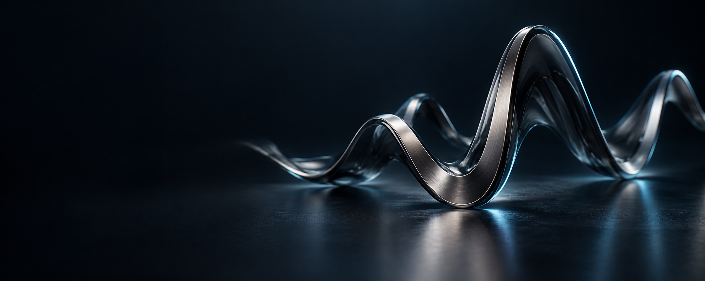
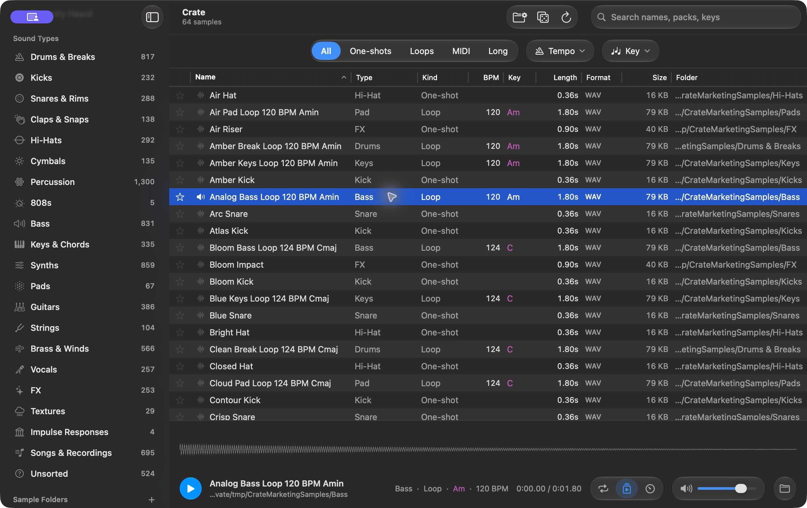

Less digging. More making.
Search across folders and narrow by sound type, loop kind, tempo and musical key.

A native sample browser for Mac
Find the right sound in the library you already own. Hear it in a moment. Drag it straight into your DAW.
Explore CrateThe app
One focused place for search, audition and discovery. Built around the files you keep on your Mac.

Actual Crate interface. Shown with original demonstration samples.
Search across folders and narrow by sound type, loop kind, tempo and musical key.
Move through sounds with the keyboard, see the waveform and audition without breaking flow.
Find related sounds, keep favorites, then drag the file directly into your session.